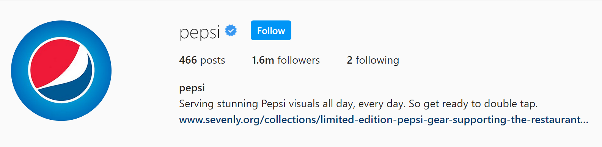

Physical Security
If an attacker gets physical access to your infrastructure, it becomes easier to infiltrate your systems
Physical Security is not limited to locking up your server room
Or building walls
Remember Stuxnet?
Stuxnet is a worm that is believed to have been delivered to Iran's power plants via a USB Drive.
It reportedly ruined nearly 1/5th of Iran's Nuclear Centrifuges.
Who does Digital Security affect?
Who does Digital Security affect?
- Individuals
- Corporations
- Governments
- Armed Forces
- Judicial System
Individuals
-
Identity Theft
- Stolen Credit Cards
- Taking over Social Media Accounts
- Using Access/Insurance
- Accepting or Paying Bribes
- Paying for Drugs
- Terrorist Activities
-
Privacy
- Home and Work address
- Personal Schedules/Location
- Medical Conditions
- Personal/Political Views
-
Personal Security
- Tracking a woman's movements
- Breaking into your home while you're away
Corporations
-
Financial
- Diverting Payments
- Creation of Fake Invoices
- Liabilities from a Breach
-
Inability to do Business
- Breaches can cause systems to be shutdown
- Product Prices can changed
- Business users can be locked out
-
Reputation
- Security Breaches reduce Trust
- Racist content from hacked accounts
-
Confidential
- Trade Secrets
- Confidential Plans
- Corporate Espionage
Identity, Authentication and Authorization
-
Identity
Your physical identity is who you are.
Your digital identity is a profile created for you that works with a specific set of digital fora.
-
Authentication
Authentication is used to prove your identity.
-
Authorization
Authorization is used to define what a given actor is allowed to do.
Identity
- Digital Identities can belong to individuals, corporations, subdivisions, brands, governments, any collection of individuals, animals, fictitious characters, dieties and even places. And they may be operated by individuals or collections of individuals.
-


Authentication
- Identities are authenticated using credentials
-
- Passwords
- Biometrics
- Clickpoints
- Cognitive
Which authentication mechanism is the best?
- A 2012 paper is considered the seminal research on this topic.
- It compared 36 credential mechanisms on 25 different parameters, and essentially found that passwords aren't going anywhere.
But Biometrics!
But Biometrics!
But Biometrics are part of me, so how can they be stolen?
I wish this was a joke
But biometric fraud need not be gruesome.
How else is security compromised?
- Social Engineering
- Phreaking
- Phishing
How else is security compromised?
- Interception
- Unencrypted Web Traffic
- GSM Traffic
Hashing vs Encryption
- Hashing irreversibly converts a string into another form.
- Encryption is reversible. Should be done only if you need the original value back.
- Passwords must always be hashed.
- Credit Card numbers need to be encrypted.
If passwords are hashed, why is a stolen database a problem?
- Brute Force.
- Rainbow Tables.
What is the solution?
- Passwords must be hashed with a per-user salt.
- Security can be further improved with a pepper.